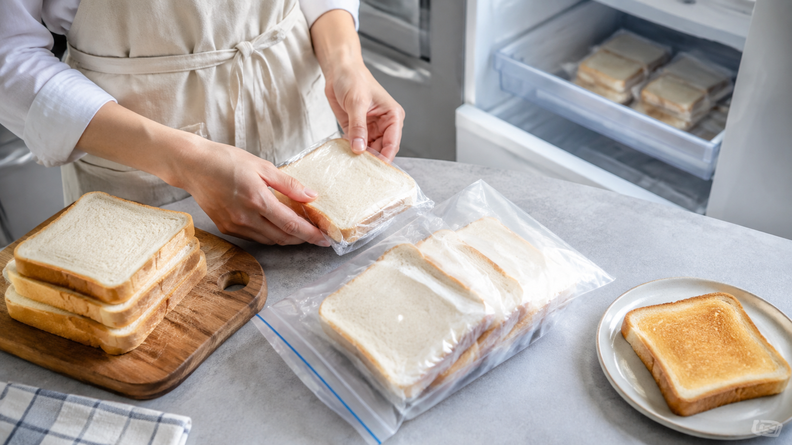

パンは、冷蔵庫より冷凍庫へ。冷たいほど長持ちとは限らない
食パンが二枚だけ残った夜、なんとなく冷蔵庫へ入れる。
翌朝、かびてはいないのに、昨日よりぱさついて硬い。袋を閉じたはずなのに、パンの中では別の変化が進んでいる。
パンの柔らかさを数日先まで残したいなら、冷蔵より冷凍が向いている。理由は、冷凍庫のほうが「もっと冷たいから」だけではない。パンのでんぷんが並び直す速さが、冷蔵温度では上がりやすいからだ。
今日の結論
すぐ食べ切らないパンは、一枚ずつ取り出せる形にして、空気を遮って早めに冷凍する。
冷蔵庫の温度帯では、焼いたときにほどけたでんぷんが再び整列し、パンの中身を固くしやすい。冷凍すると水と分子の動きが大きく抑えられるため、その変化を遅らせやすい。
冷蔵庫は食品を保存する万能の箱ではない。パンの場合は、腐敗を遅らせる温度と、柔らかさを守る温度が同じではない。
焼きたてのパンでは、でんぷんの鎖がほどけている
小麦粉の大部分を占めるでんぷんは、焼く前には粒の中へ詰まっている。
水を含んだ生地が加熱されると、でんぷんは水を抱え、整っていた部分が崩れる。焼き上がったパンの中身が柔らかいのは、でんぷんが水と一緒に動ける状態になっているからだ。
ところが、冷めた瞬間から、ほどけた鎖の一部は再び近づき始める。ばらした麺が、時間とともに何本かずつ固まっていくような変化だ。この並び直しをでんぷんの老化という。
老化が進むと、水の居場所も変わる。パンは単に乾くだけでなく、中の骨組みそのものが固くなっていく。
冷蔵庫は、でんぷんが並び直しやすい場所になる
パンの保存温度を追った研究では、冷蔵温度ででんぷんの並び直しが速く進み、冷凍状態では水分の状態が長く保たれた。
ここから分かるのは、「温度を下げるほど、パンの変化が同じ割合で遅くなる」わけではないことだ。冷蔵庫では分子がまだ動けるうえ、でんぷんが整列しやすい温度帯へ入る。冷凍庫では水の多くが凍り、鎖が動く余地そのものが小さくなる。
冷蔵したパンが急に古く感じられるのは、袋の閉め方だけの問題ではない。でんぷんが冷蔵庫の中で、新しい固い並びへ戻っている。
冷凍は時間を止めるのではなく、動きを小さくする
冷凍すれば、パンが永遠に焼きたてのままになるわけではない。
冷凍保存中のパンを追った研究では、冷凍状態でも、でんぷんの再結晶化と水分移動が起こりうることが示されている。ただ、その動きは冷蔵中より制限されるため、家庭では「数日後まで柔らかさを残す」という目的に使いやすい。
冷凍の役割は、焼きたてへ巻き戻すことではない。パンの時計をゆっくりにし、食べるときの加熱で香りと柔らかさを戻しやすい位置に置いておくことだ。
冷凍するなら、食べる単位で空気を遮る
パンを一斤のまま凍らせると、必要な分だけ取り出しにくい。何度も袋を開けたり、全体を少し解凍したりすると、水分が移動する機会が増える。
食パンは一枚ずつ、丸パンやベーグルは一食分ずつ分ける。袋の中の空気をできるだけ抜き、においと乾燥を遮る。買った日の柔らかさが残っているうちに凍らせることも大切だ。硬くなってから冷凍しても、すでに並び直したでんぷんまで元には戻らない。
食べるときは、必要な分だけ取り出して温める。加熱ででんぷんの整列が一部ゆるみ、香りも立つ。保存と再加熱を一組の動作として考えると、冷凍パンは扱いやすくなる。
この考え方は、「とりあえず冷蔵」をやめる基準になる
保存場所は、冷たさの順位だけで決めない。その食品で、何の変化を遅らせたいかを先に考える。
パンでは、でんぷんの並び直しが食感を大きく変える。同じように、米、餅、蒸しパンなど、でんぷんを多く含む食品も、温度の履歴によって硬さや水分の感じ方が変わる。ただし、水分量やでんぷんの種類が違うため、パンとまったく同じ保存期間になるわけではない。
それでも、「冷蔵庫へ入れれば何でも長持ちする」という考えから一歩進める。肉や野菜では役立つ冷蔵が、パンの柔らかさには逆方向へ働くことがある。保存は温度の低さではなく、守りたい性質から選ぶ。
まとめ
パンが冷蔵庫で硬くなりやすいのは、単に水分が抜けるからではない。焼いてほどけたでんぷんが、冷蔵温度で並び直し、固い構造へ戻るからだ。
冷凍すると、水とでんぷんの動きが抑えられ、その変化を遅らせやすい。
今日パンが余ったら、一枚ずつ取り出せる形で包み、その日のうちに冷凍する。「一番冷たい場所」ではなく、「柔らかさを守れる場所」を選ぶ。それが、冷蔵より冷凍を選ぶ本当の理由だ。
参考文献
- Aguirre JF, Osella CA, Carrara CR, Sánchez HD, Buera MDP. Effect of storage temperature on starch retrogradation of bread staling. Starch/Stärke. 2011;63(9):587-593. https://doi.org/10.1002/star.201100023
- Ronda F, Caballero PA, Quilez J, Roos YH. Staling of frozen partly and fully baked breads. Journal of Cereal Science. 2011;53(1):97-103. https://doi.org/10.1016/j.jcs.2010.10.003
- Bosmans GM, Lagrain B, Ooms N, Fierens E, Delcour JA. Storage of parbaked bread affects shelf life of fully baked end product: A 1H NMR study. Food Chemistry. 2014. https://www.sciencedirect.com/science/article/pii/S0308814614007626
- He H, et al. Influence of Storage Temperature on Starch Retrogradation and Digestion of Chinese Steamed Bread. Foods. 2024;13(4):517. https://pmc.ncbi.nlm.nih.gov/articles/PMC10888248/